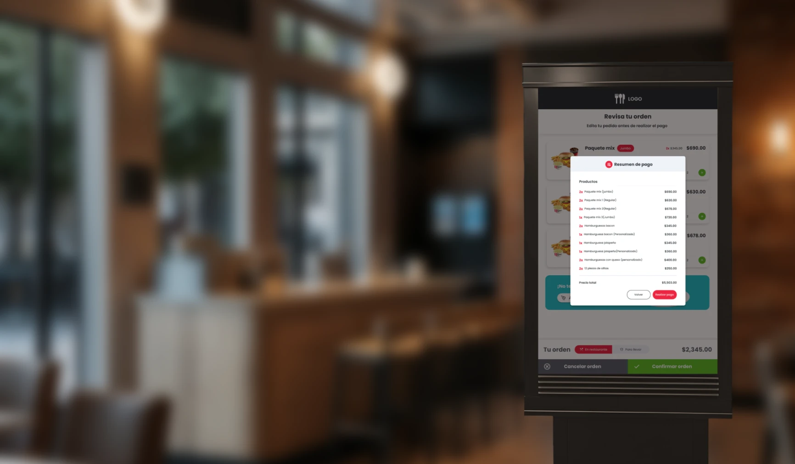
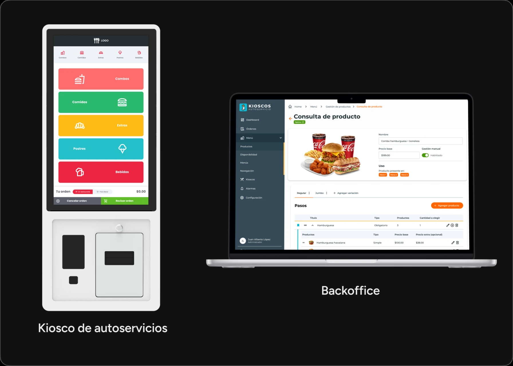
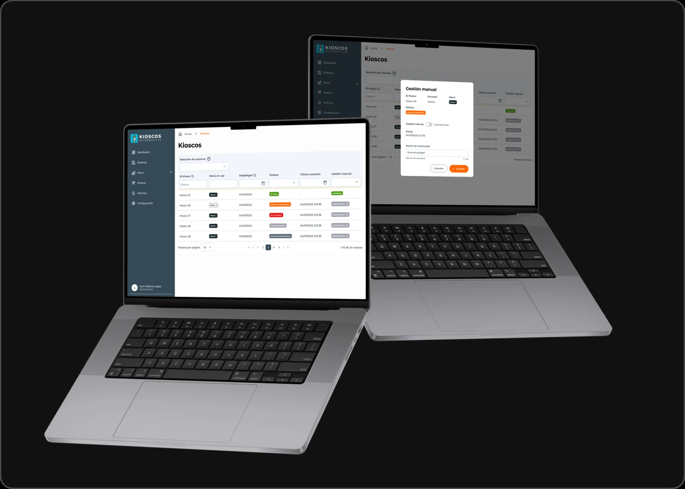
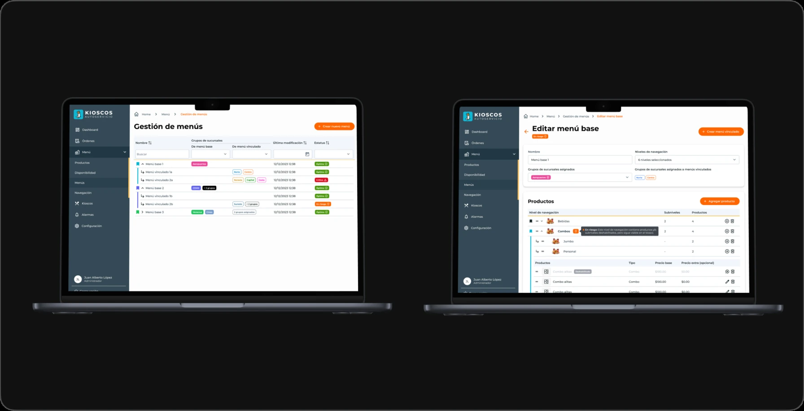
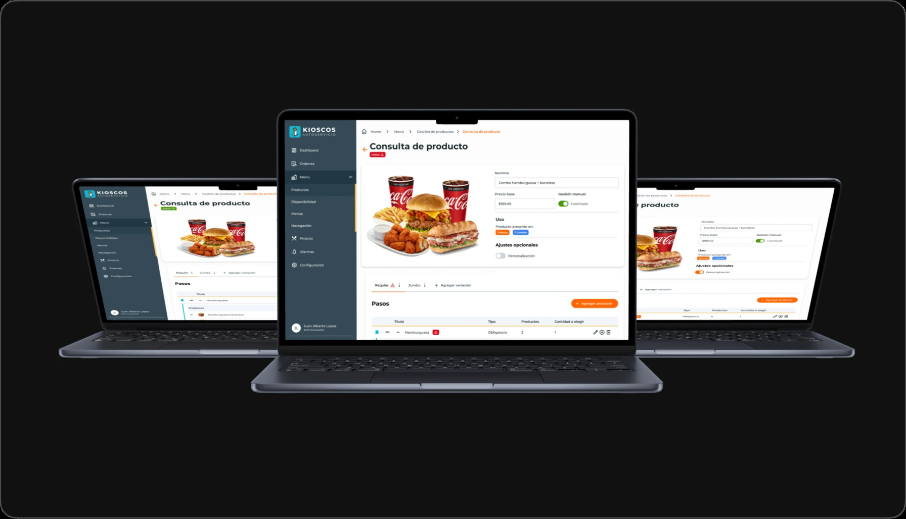
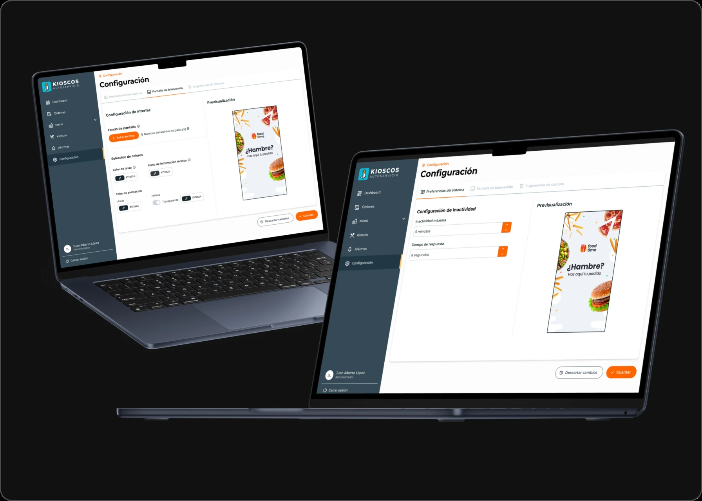
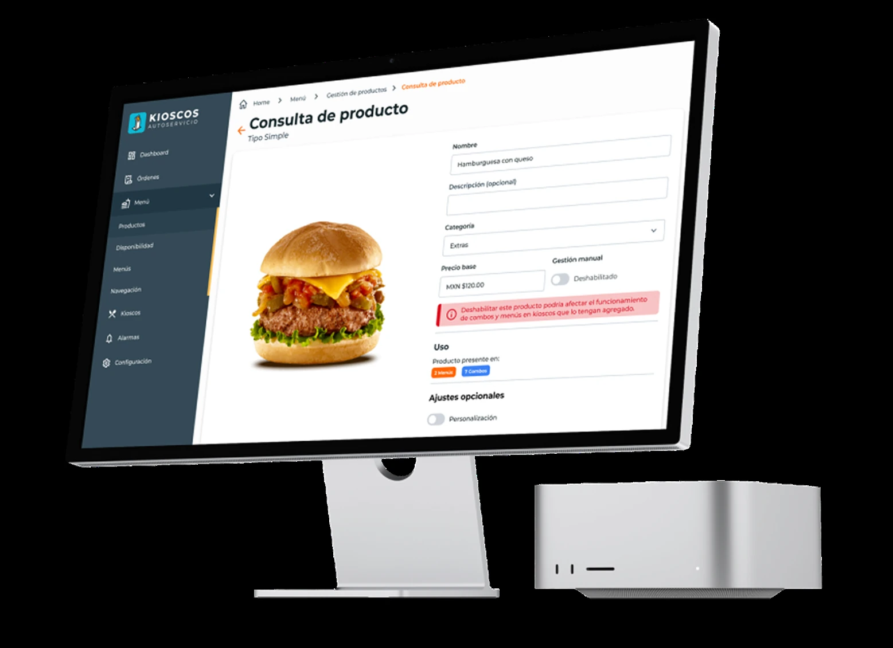

Sistema de Pedidos & Gestión
Kioscos de autoservicio: el diseño que unifica la experiencia de compra y la gestión de stock.
- Sector
- Gastronomía · Autoservicio
- Timeline
- May 2024 – Nov 2024
- Rol
- UX/UI Designer
- Skills
- User stories · UX/UI · Prototype · Workshops

⛔ Problema
El sistema enfrentaba un doble desafío:
-
01
Exposición y perfeccionamiento
La participación en Abastur, feria internacional del sector, exigía ajustes finales que elevaran el estándar de calidad visual y funcional del producto. -
02
Escalabilidad y flexibilidad
El sistema debía escalar: readaptaciones rápidas de branding por cliente e integración de nuevas funcionalidades sin romper lo existente.
Objetivo: un sistema con mayores funcionalidades de gestión y mejoras en la interfaz del kiosco, para lograr una experiencia integrada entre hardware y software.

🛠️ Proceso
Trabajé con una dinámica ágil de ciclos cortos: onboarding y definición de alcances → wireframes de baja fidelidad → crosschecks constantes con el equipo → alta fidelidad y cierre. Ese ida y vuelta permanente con desarrollo permitió detectar desvíos temprano, cuando corregirlos todavía era barato.

💡 Solución
A. Gestión inteligente de menús y alertas de stock
-
01
Gestión jerárquica de menús
Un menú principal con variantes vinculadas: sincronización automática de cambios y desvinculación por sucursal cuando hace falta una excepción. -
02
Alertas predictivas de stock
Productos clasificados en óptimos, en riesgo y críticos, para anticipar quiebres de stock antes de que el cliente se encuentre con un "no disponible".


B. Personalización de marca y flujo
-
01
Administración de kioscos por sucursal
Desde el backoffice, cada sucursal controla sus propios equipos. -
02
Pantalla de bienvenida dinámica
Imágenes, videos y colores configurables por cliente: el mismo sistema, con la marca de cada uno. -
03
Preferencias ajustadas al hardware
Tiempos de inactividad y de respuesta configurables según el equipo físico donde corre cada kiosco.

💥 Impacto
El branding flexible convirtió al sistema en una herramienta de venta: facilitó la exposición en ferias y la adquisición de nuevos clientes, que podían ver el kiosco con su propia marca. Y del lado de la operación, la visibilidad y el control de stock y de kioscos mejoraron la eficiencia del día a día.
💭 Mi aprendizaje
Diseñar para kioscos físicos me obligó a pensar más allá de la pantalla: resoluciones y dispositivos diversos, y decisiones de interfaz condicionadas por el hardware donde vive el producto. También me llevé una dinámica de trabajo rápida, con crosschecks de sprint como red de seguridad.
